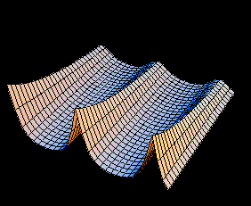

|
The imaginary number is a fine and wonderful recourse of the divine spirit,
almost an amphibian between being and not being.
--Gottfried Whilhem Leibniz | The shortest path between two truths in the real domain passes
through the complex domain.
-- Jacques Hadamard |
| The complexity of the complex variable course is
more imaginary than real. -- An encouraging observation |
"The number you have dialed is imaginary.
Please rotate your phone 90 degrees and try again."
-- A math joke |
Instructor:
Andrej V. Cherkaev,
professor
|  |
| Exam | firstst midterm | second midterm | Final |
| Sections | 1 - 29 | 30 - 64 | 1 - 92 |
Calculator: A calculator is not required for the course, although it may be useful for some homework problems. Calculators will be forbidden in exams.
Final exam: Half of the final will be devoted to material covered after the second midquarter exam. The rest will be comprehensive. Students must take the final to pass the course.
Grades: The final grade will be based on the following score: Two midquarter exams (50%) + homework(10%) + final score (40%).
ADA: The Americans with Disabilities Act requires that reasonable accommodations be provided for students with physical, sensory, cognitive, systemic, learning and psychiatric disabilities. Please contact me at the beginning of the quarter to discuss any such accommodations for the course.
| Section | Topic | Page [Problems] |
| 1- 2 | Complex Numbers | 5 [2, 4, 5, 9, 12] |
| 3- 5 | Geometric Prop. | 11 [3, 10, 14], 17 [1, 4, 5, 8, 13] |
| 6- 8 | Roots | 22 [1, 4, 6, 7, 8], 25 [1-5] |
| 9-14 | Mappings | 32 [3, 4, 5, 7] |
| 15-18 | Derivatives | 42 [2, 4, 9], 47 [1, 3, 8], 54 [1, 2d, 7] |
| 19-22 | CR Eqns. | 62 [1, 6, 7b, 10, 12] |
| 23-25 | Exponentials | 68 [3, 6, 8, 10], 71 [2, 7, 9], 74 [2, 5] |
| 26-29 | Logs | 79 [3, 6, 14], 84 [2, 6, 9, 10, 11] |
| 30-33 | Integrals | 92 [3, 4, 11], 102 [1, 5, 7, 11, 13, 15] |
| 34-35 | Contour Integrals | 119 [2, 3, 7] |
| 36-38 | Cauchy Goursat | 128 [1, 3, 5] |
| 39-40 | Liouville's Th. | 136 [1, 2, 3, 4, 5, 6] |
| 43-45 | Algebra & Series | 156 [4, 6, 8] |
| 46-51 | Laurent Series | 172 [1, 3, 10, 15] |
| 53-55 | Residues | 188 [1, 2, 4, 7] |
| 56-58 | Poles | 197 [1, 2, 3, 4, 10] |
| 60-61 | Evaluation of integrals | 208 [1, 2, 3, 4, 6, 9], 214 [1, 2, 6, 13)] |
| 62-64 | Improper Integrals | 218 [1, 3, 6], 226 |
| 66-67 | Other applications | [1, 2, 3, 7], 242 [1, 6] |
| 68-72 | Linear fractions | 250 [2, 8, 11, 17], 258 [2, 5, 6, 13] |
| 79-81 | Exp-sin-log-root | 266 [4, 5, 6, 9], 275 [3, 4, 8] |
| 82-83 | Harmonic Mapping | 289 [1, 4, 6], 297 [1, 3, 9] |
| 84-85 | Steady Temp. | 307 [1, 2, 5, 8] |
| 86-87 | Electrost. potential | 312 [2, 3, 7, 10] |
| 88-92 | Stream Function | 322 [3, 4, 5, 7, 11] |
Quadratic, cubic and quartic equations; introduction of complex numbers
Irrotational flows by conformal mappings
Interactive page, a lot of pictures.
Lectures on
Advanced Topics in Theory of Functions of a Complex Variable by
Norm Bleistein
COMPLEX ANALYSIS: Mathematica 4.0 Notebooks by
John H. Mathews, and Russell W. Howell. Lecture notes and Mathematica-based
examples, including Julia & Mandelbrot sets, conformal mappings, etc.
68 lessons by Dr. John H. Mathews.
A part of the book, Complex Analysis for
Mathematics & Engineering, 4th Ed, 2001, by John H. Mathews and
Russell W. Howell
Please let me know if you find
interesting web sites related to the course
Thank you.